Functions
Type flexibility
All functions in this package support generic numeric types. Instead of being restricted to Float64, the functions accept any AbstractFloat (or Real) input type and preserve the type through computation where possible. This means you can use Float32 for faster computation with lower precision, or BigFloat for arbitrary-precision calculations.
Examples:
# Float32 inputs → Float32 output
debye_function(2.0f0, 1.0f0, 5.0f0) # returns Float32
# BigFloat for high precision
debye_function(big"2.0", big"1.0", big"5.0") # returns BigFloat
# Integer inputs are automatically promoted to Float64
U(0, 1) # returns Float64
# Mixed types promote to the widest common type
debye_function(2.0f0, 1.0, 5.0f0) # Float32 + Float64 → Float64The following table summarizes the type behavior for each function family:
| Function family | Input type constraint | Type preservation |
|---|---|---|
| Coulomb wave functions | Number | Via Julia's promotion rules |
| Whittaker functions | Number; nonzero argument | Full (Float32, Float64, BigFloat); real and complex inputs |
| Debye functions | Real / AbstractFloat | Full (Float32, Float64, BigFloat) |
| Fresnel integrals | Number | Full (Float32, Float64, BigFloat); real and complex inputs |
| Dawson integral | Real | Full (Float32, Float64, BigFloat) |
| Clausen functions | Real for θ | Promoted to AbstractFloat |
| Fermi-Dirac integrals | Real | Full (Float32, Float64, BigFloat) |
| Bose–Einstein integrals | Real; integer or half-integer order | Full (Float32, Float64, BigFloat) |
| Marcum Q-function | Real / Number | Full (Float32, Float64) |
| Voigt function | Real | Full (Float32, Float64, BigFloat) |
| Parabolic cylinder | Real / AbstractFloat | Full (Float32, Float64, BigFloat) |
Automatic differentiation
All functions support automatic differentiation via ForwardDiff.jl. The extension is a weak dependency and is loaded automatically when ForwardDiff is available.
Differentiating Fresnel integrals
The derivative of FresnelC is analytically cos(πx²/2), which ForwardDiff recovers exactly:
using FewSpecialFunctions, ForwardDiff
x0 = 0.7
dC = ForwardDiff.derivative(FresnelC, x0)
exact = cos((π / 2) * x0^2)
isapprox(dC, exact) # trueSimilarly for FresnelS:
dS = ForwardDiff.derivative(FresnelS, x0)
isapprox(dS, sin((π / 2) * x0^2)) # trueMarcum Q-function
The derivative of MarcumQ(M, a, b) with respect to b is available analytically via dQdb. ForwardDiff gives the same result:
M, a, b = 2.0, 1.5, 3.0
dQ_ad = ForwardDiff.derivative(b -> MarcumQ(M, a, b), b)
dQ_exact = dQdb(M, a, b)
isapprox(dQ_ad, dQ_exact) # trueForwardDiff can also differentiate with respect to a or M, where no closed-form is available:
# Gradient with respect to both a and b simultaneously
f(v) = MarcumQ(2.0, v[1], v[2])
g = ForwardDiff.gradient(f, [1.5, 3.0])
# g[1] ≈ d/da MarcumQ, g[2] ≈ dQdb(2.0, 1.5, 3.0)Parabolic cylinder function
The first derivative dU(a, x) is built in; ForwardDiff agrees with it. The second derivative follows from the parabolic cylinder ODE, U''(a,x) = (x²/4 + a) U(a,x), and ForwardDiff recovers it by differentiating dU:
a, x0 = 0.5, 1.2
# First derivative
dU_ad = ForwardDiff.derivative(x -> U(a, x), x0)
isapprox(dU_ad, dU(a, x0)) # true
# Second derivative via ForwardDiff of dU
d2U_ad = ForwardDiff.derivative(x -> dU(a, x), x0)
d2U_ode = (x0^2 / 4 + a) * U(a, x0) # from the ODE
isapprox(d2U_ad, d2U_ode) # trueCoulomb wave functions
The Coulomb wave functions are solutions to the radial Schrödinger equation for a charged particle in a Coulomb potential. This package implements both the regular (F_ℓ(η, ρ)) and irregular (G_ℓ(η, ρ)) Coulomb wave functions, as well as auxiliary functions and normalization constants. The implementation follows the approach described in arXiv:1804.10976, using confluent hypergeometric functions and robust normalization. The functions are implemented for real and complex arguments, and special care is taken to ensure numerical stability across a wide range of parameters.
F(ℓ, η, ρ): Computes the regular Coulomb wave function using the normalization constant and the confluent hypergeometric function. For real arguments, the function returns the real part.G(ℓ, η, ρ): Computes the irregular Coulomb wave function as a combination of outgoing and incoming solutions.C(ℓ, η): Returns the normalization constant for the regular solution.η(a, k): Computes the Coulomb parameter.H⁺andH⁻: Outgoing and incoming Coulomb wave functions, respectively.
The implementation is robust for both small and large arguments, and auxiliary functions such as derivatives and normalization factors are also provided. See the reference for mathematical details.
x = range(0, stop=25, length=1000)
plot(x, real(F.(0.0, 0.3, x)), label=L"F_0(0.3,ρ)")
plot!(x, real(F.(0.0, -0.3, x)), label=L"F_0(-0.3,ρ)")
xlabel!(L"ρ")
title!("Regular Coulomb Wave Functions")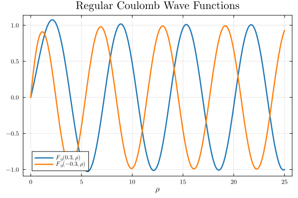
Use a similar approach to plot the regular Coulomb functions for different a $\ell$
x = range(0, stop=25, length=1000)
plot(x, real(F.(1e-5, 5.0, x)), label=L"F_0(5.0,ρ)", linewidth=2)
plot!(x, real(F.(1.0, 5.0, x)), label=L"F_1(5.0,ρ)", linewidth=2)
plot!(x, real(F.(2.0, 5.0, x)), label=L"F_2(5.0,ρ)", linewidth=2)
plot!(x, real(F.(3.0, 5.0, x)), label=L"F_3(5.0,ρ)", linewidth=2)
title!("Regular Coulomb Wave Functions for Different ℓ")
xlabel!(L"ρ")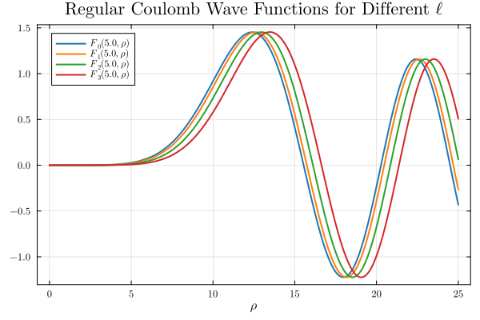
Complex plots
using DomainColoring, FewSpecialFunctions, Plots
domaincolor(z -> F(0,z,z), [-2, 2, 0, 5], grid=true)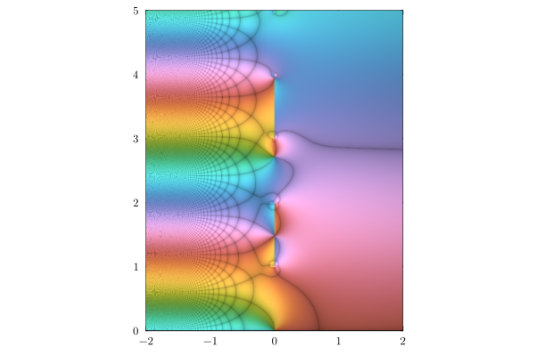
Whittaker functions
WhittakerM and WhittakerW evaluate the standard solutions of Whittaker's equation:
\[M_{\kappa,\mu}(z) = e^{-z/2}z^{\mu+1/2} {}_1F_1(\mu-\kappa+1/2;1+2\mu;z),\qquad W_{\kappa,\mu}(z) = e^{-z/2}z^{\mu+1/2} U(\mu-\kappa+1/2,1+2\mu,z).\]
Here the three-argument $U$ is Tricomi's hypergeometric function, distinct from the package's two-argument parabolic cylinder function U(a, x). dWhittakerM and dWhittakerW differentiate with respect to z.
Inputs must be finite, and this API requires z ≠ 0. Positive real arguments with real parameters return real values. Complex inputs select the principal branch; use complex(z) explicitly for negative real arguments. The sign of a zero imaginary part selects the corresponding side of the cut. WhittakerM has parameter poles at negative integer 2μ, which raise DomainError; WhittakerW remains defined there.
julia> using FewSpecialFunctions
julia> WhittakerM(0, 0.5, 2) ≈ 2sinh(1)
true
julia> WhittakerW(0, 0.5, 2) ≈ exp(-1)
true
julia> dWhittakerW(0, 0.5, 2) ≈ -exp(-1) / 2
true
julia> WhittakerW(0.2, 0.3, 1 - 2im) ≈ conj(WhittakerW(0.2, 0.3, 1 + 2im))
trueThe implementation uses the existing Kummer series with additional working precision, a connection formula for W with removable parameter poles evaluated by limits, and an asymptotic expansion accepted only when its terms reach working precision. These methods follow DLMF 13.14 and the series techniques in Thompson & Barnett (1986). It does not implement the full COULCC continued-fraction algorithm. The extra-precision series favors accuracy over speed, especially for large parameters or complex arguments. Its precision changes share the cylinder fallback lock described below.
ForwardDiff uses analytic derivatives in z and finite differences for real κ and μ, following the package's existing differentiation convention. Tests include independent mpmath values; the implementation was also compared with the direct evaluation path in WhittakerCoulomb.jl. The latter shares our hypergeometric dependency, so that comparison alone does not establish numerical accuracy.
Real arguments
The following plots hold μ = 0.3 fixed and vary κ. For these parameters, M grows at large positive arguments, while W decays. Each panel uses its own vertical scale. The grid starts above zero because the API requires a nonzero argument.
x = range(0.05, 8, length = 250)
μ = 0.3
pM = plot(xlabel = L"x", ylabel = L"M_{\kappa,0.3}(x)", title = "Whittaker M", legend = :topleft)
pW = plot(xlabel = L"x", ylabel = L"W_{\kappa,0.3}(x)", title = "Whittaker W", legend = :topright)
for (κ, style) in zip((-0.5, 0.0, 0.5), (:solid, :dash, :dot))
plot!(pM, x, WhittakerM.(κ, μ, x), label = "κ = $κ", linestyle = style)
plot!(pW, x, WhittakerW.(κ, μ, x), label = "κ = $κ", linestyle = style)
end
plot(pM, pW, layout = (1, 2), size = (800, 350))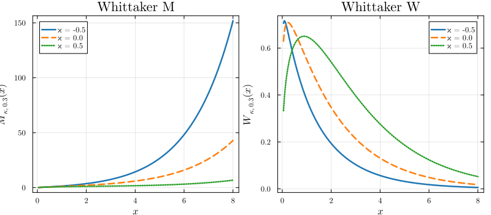
Argument derivatives
dWhittakerM and dWhittakerW give the slopes of the corresponding solutions. Here both parameters are fixed, and the derivatives are evaluated directly using the analytic formulas in the package.
κ, μ = 0.2, 0.3
x = range(0.1, 4, length = 250)
plot(
x, dWhittakerM.(κ, μ, x), label = L"M'_{0.2,0.3}(x)",
xlabel = L"x", ylabel = "derivative", title = "Whittaker argument derivatives",
legend = :topleft, size = (650, 350)
)
plot!(x, dWhittakerW.(κ, μ, x), label = L"W'_{0.2,0.3}(x)", linestyle = :dash)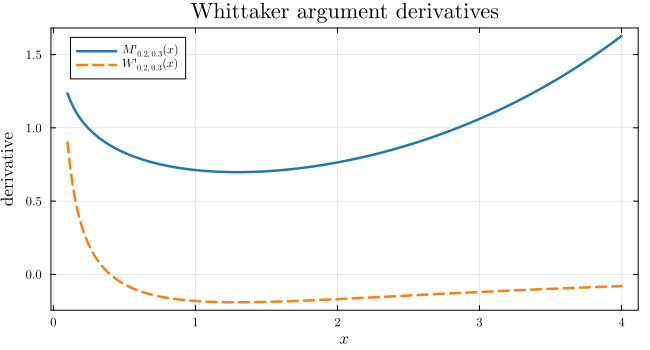
Complex arguments
This example follows the vertical line z = 1 + iy, which avoids the origin and the negative-real branch cut. For real κ and μ, conjugation symmetry makes the real parts even in y and the imaginary parts odd.
κ, μ = 0.2, 0.3
y = range(-6, 6, length = 251)
z = 1 .+ im .* y
m = WhittakerM.(κ, μ, z)
w = WhittakerW.(κ, μ, z)
pM = plot(
y, real.(m), label = "real part", xlabel = L"y", ylabel = "value",
title = L"M_{0.2,0.3}(1+iy)", legend = :outerbottom, legend_columns = 2
)
plot!(pM, y, imag.(m), label = "imaginary part", linestyle = :dash)
pW = plot(
y, real.(w), label = "real part", xlabel = L"y", ylabel = "value",
title = L"W_{0.2,0.3}(1+iy)", legend = :outerbottom, legend_columns = 2
)
plot!(pW, y, imag.(w), label = "imaginary part", linestyle = :dash)
plot(pM, pW, layout = (1, 2), size = (800, 400))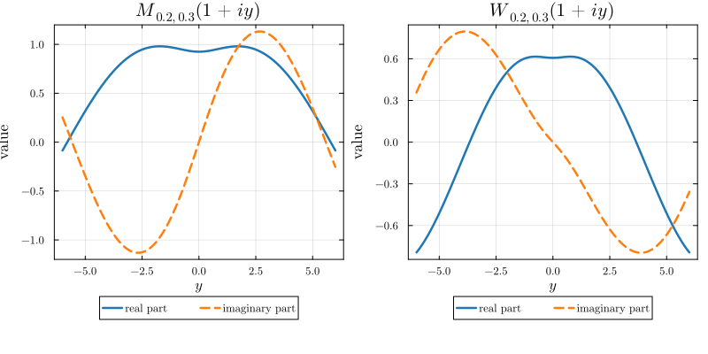
Marcum Q-function
The Marcum Q-function is a generalized integral involving the modified Bessel function of the first kind. It is widely used in communications and radar signal processing. The implementation in this package is based on the methods described in arXiv:1311.0681v1, providing accurate results for a wide range of parameters.
MarcumQ(μ, a, b): Computes the Marcum Q-function for orderμ, non-centrality parametera, and thresholdb. The implementation uses series expansions, asymptotic expansions, and recurrence relations for efficiency and accuracy.dQdb(M, a, b): Computes the derivative of the Marcum Q-function with respect tob.
The code automatically selects the most appropriate algorithm depending on the input parameters.
bs = collect(range(0.0,10,length=100))
M1 = MarcumQ(1, 0.2, bs)
M2 = MarcumQ(1, 1.3, bs)
M3 = MarcumQ(1, 2.5, bs)
M4 = MarcumQ(1, 4.7, bs)
plot(bs, M1, label=L"a=0.2")
plot!(bs, M2, label=L"a=1.3")
plot!(bs, M3, label=L"a=2.5")
plot!(bs, M4, label=L"a=4.7")
plot!(xlabel="b", ylabel=L"Q(1,a,b)", title="Marcum Q-function")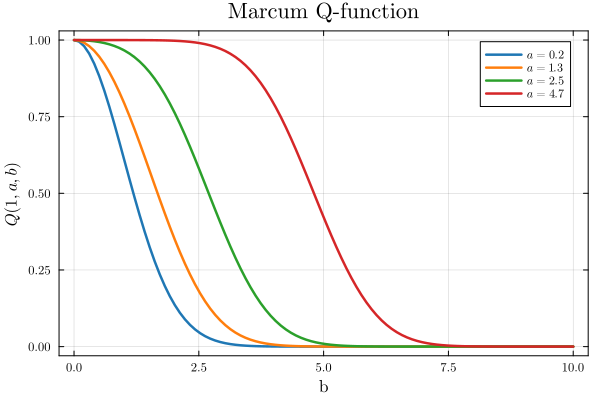
Derivative of the Marcum Q-function
bs = collect(range(0.0,10,length=100))
M1 = dQdb(1, 0.2, bs)
plot(bs, M1, label=L"a=0.2")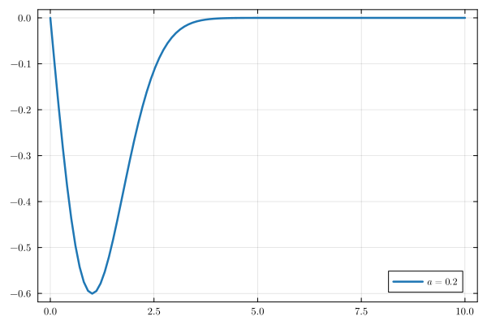
Voigt function
The real Voigt function voigt(x, y) is the convolution of a Gaussian and a Lorentzian profile, with nonnegative width parameter y.
default(fontfamily="Computer Modern", linewidth=2.5, framestyle=:box, grid=true)
x = range(-6, 6, length=1000)
plot(x, voigt.(x, 0.1), label=L"y=0.1", xlabel=L"x", ylabel=L"K(x,y)",
title="Voigt function")
plot!(x, voigt.(x, 1.0), label=L"y=1.0")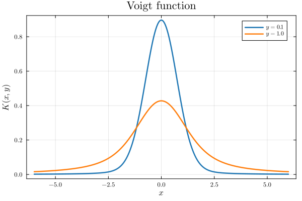
Parabolic cylinder functions
The parabolic cylinder functions U(a, x) and V(a, x) solve the parabolic cylinder differential equation. U and W use asymptotic expansions only when their decreasing terms reach the target precision. Otherwise, they use a convergent series with extra working precision to control cancellation. This fallback favors accuracy over speed. The derivatives dU, dV, and dW differentiate the same expansions as their corresponding functions.
U(a, x): Computes the parabolic cylinder function of the first kind using a combination of series and asymptotic expansions.V(a, x): Computes the second, linearly independent solution using a convergent series with extra working precision.W(a, x): Solves the related equation $W''=(a-x^2/4)W$ using series or asymptotic expansions.
The formulas follow DLMF Chapter 12, including its expansions for W.
On Julia versions with process-global BigFloat precision (including Julia 1.10), the extra-precision fallback is serialized between cylinder calls. Avoid running it concurrently with unrelated BigFloat arithmetic, which shares that precision setting.
The $D_ν$ convention and scaled values
ParabolicCylinderD implements $D_ν(x)=U(-ν-1/2,x)$ for real order and argument. dParabolicCylinderD gives its argument derivative.
For finite real a and x ≥ 0, U_scaled and V_scaled use the scaling of Gil, Segura & Temme (2006), equations (7), (11)–(13):
\[U_{\rm scaled}(a,x)=e^{L(a,x)}U(a,x),\qquad V_{\rm scaled}(a,x)=e^{-L(a,x)}V(a,x),\]
where, with $q=x^2/4+a$,
\[L(a,x)=\begin{cases} x^2/4,&a=0,\\ \frac{a}{2}(\log|a|-1),&q\le0,\ a\ne0,\\ a\log(x/2+\sqrt{q})+\frac{x}{2}\sqrt{q}-\frac{a}{2},&q>0,\ a\ne0. \end{cases}\]
ParabolicCylinderD_scaled is U_scaled(-ν-1/2, x). The scaling removes dominant behavior in both order and argument; for general order it differs from simply multiplying Dν(x) by exp(x²/4). The asymptotic path combines exponential factors algebraically; the series path scales before conversion to the output type. Thus intermediate underflow or overflow does not destroy the scaled result. Large-order series can be slow; this implementation does not port Algorithm 850's full method-selection scheme.
julia> using FewSpecialFunctions
julia> ParabolicCylinderD(1, 2) ≈ 2exp(-1)
true
julia> U(0, 60) == 0 && isinf(V(0, 60))
true
julia> U_scaled(0, 60) ≈ 0.12908600517683427
true
julia> V_scaled(0, 60) ≈ 0.10301719023914642
trueAll five additions preserve Float32, Float64, and BigFloat and support broadcasting. ForwardDiff supports derivatives in real order and argument; for the scaled functions the argument derivative includes the derivative of the scaling factor.
xs = collect(-2.5:0.05:2.5)
plot(xs, U(0.5, xs), label=L"a=0.5")
plot!(xs, U(2.0, xs), label=L"a=2.0")
plot!(xs, U(3.5, xs), label=L"a=3.5")
plot!(xs, U(5.0, xs), label=L"a=5.0")
plot!(xs, U(8.0, xs), label=L"a=8.0")
plot!(xlabel="x", ylabel=L"U(a,x)", title="Parabolic Cylinder Function U(a,x)")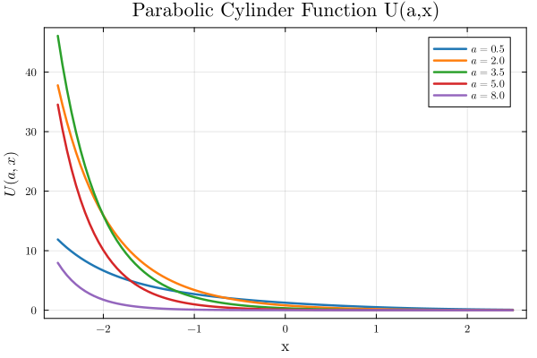
V(a, x)
The function V(a, x) is a second, linearly independent solution to the same differential equation satisfied by U(a, x). It uses a convergent series with extra working precision.
xs = collect(range(-2.5,2.5,length=100))
V1 = V(0.5, xs)
V2 = V(2.0, xs)
V3 = V(3.5, xs)
V4 = V(5.0, xs)
plot(xs, V1, label=L"a=0.5")
plot!(xs, V2, label=L"a=2.0")
plot!(xs, V3, label=L"a=3.5")
plot!(xs, V4, label=L"a=5.0")
ylims!(-3.0, 3.0)
plot!(xlabel="x", ylabel=L"V(a,x)", title="Parabolic cylinder function V(a,x)")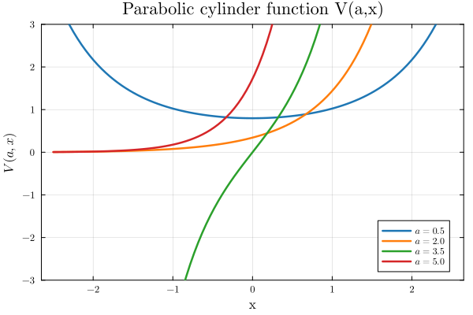
Debye functions
The Debye functions are given by
\[ D_n(\beta,x)= \frac{n}{x^n} \int_0^x \frac{t^n}{(\text{e}^t-1)^\beta} \, \text{d}t\]
For finite n > 0, the integral converges when 0 < β < n+1. At x = 0, the limiting value is 0 for β < 1, 1 for β = 1, and Inf for β > 1.
The implementation uses transformed adaptive quadrature. tol specifies a relative tolerance, floored at eight times machine epsilon; max_terms limits the number of quadrature subintervals. Failure to reach that tolerance raises an error.
x = range(0,stop=25,length=1000)
plot(x,debye_function(1.0,1.0,x),label=L"D_1(x)")
plot!(x,debye_function(2.0,1.0,x),label=L"D_2(x)")
plot!(x,debye_function(3.0,1.0,x), label=L"D_3(x)")
title!("Debye Functions")
xlabel!(L"x")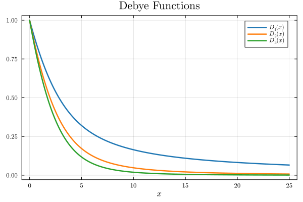
Fermi-Dirac integrals
In solid state physics the Fermi-Dirac integral is given by
\[ F_j(x) = \int_0^\infty \frac{t^j}{\exp(t-x)+1} \, dt.\]
Approximations to this and the normalized case for $j=-1/2$, $j=1/2$, $j=3/2$ and $j=5/2$ are implemented to varying accuacy. Most are of the order of $10^{-12}$.
Here is an example
x = range(0,stop=100,length=10000)
plot(x,FermiDiracIntegralNorm.(-1/2,x),label=L"F_{-1/2}(x)")
plot!(x,FermiDiracIntegralNorm.(1/2,x),label=L"F_{1/2}(x)")
plot!(x,FermiDiracIntegralNorm.(3/2,x),label=L"F_{3/2}(x)")
plot!(x,FermiDiracIntegralNorm.(5/2,x),label=L"F_{5/2}(x)")
xlabel!(L"x")
title!("Fermi-Dirac Integral")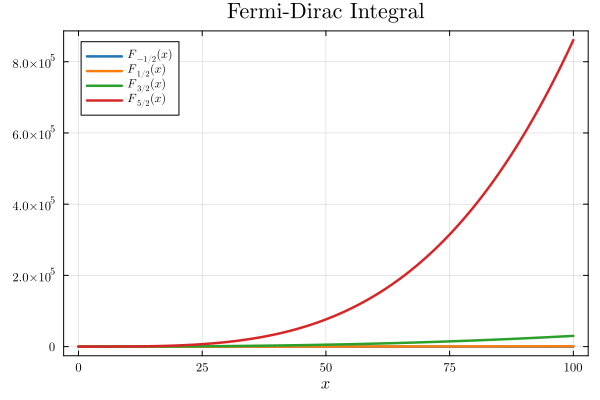
Bose–Einstein integrals
BoseEinsteinIntegral evaluates the unnormalized complete integral
\[ \mathcal{B}_k(\eta) = \int_0^\infty \frac{t^k}{\exp(t-\eta)-1}\,dt,\]
for integer or half-integer orders k > -1 and real η ≤ 0. BoseEinsteinIntegralNorm evaluates its normalized form
\[ B_k(\eta) = \frac{\mathcal{B}_k(\eta)}{\Gamma(k+1)} = \operatorname{Li}_{k+1}(e^\eta).\]
The normalized function also accepts integer or half-integer orders down to k = -9/2. For k ≤ -1, it is defined by repeated differentiation, $dB_k/d\eta = B_{k-1}$; the integral above does not converge at those orders.
Both functions return 0 at η = -Inf. At η = 0, the normalized value is $\zeta(k+1)$ for k > 0, and the unnormalized value includes the factor $\Gamma(k+1)$. For supported k ≤ 0, the limit as η → 0⁻ is Inf. Positive η, NaN, and unsupported orders raise DomainError.
julia> using FewSpecialFunctions
julia> BoseEinsteinIntegralNorm(0.5, -1.0) ≈ 0.4284407345998379
true
julia> BoseEinsteinIntegral(1.5, -1.0) ≈ (3 * sqrt(π) / 4) * 0.3957280103803376
true
julia> BoseEinsteinIntegralNorm(1, 0) ≈ π^2 / 6
true
julia> BoseEinsteinIntegralNorm(-1, -1.0) ≈ inv(expm1(1.0))
true
julia> all(isfinite, BoseEinsteinIntegralNorm.(0.5, [-2.0, -1.0, 0.0]))
trueFor Float32 and Float64, the implementation uses minimax rational approximations with convergent-series fallbacks, based on Tables A.5–A.48 of Fukushima's 2020 preprint for half-integer orders -9/2:1:39/2 and integer orders 1:19. The approximations target near-double-precision accuracy for Float64; Float32 results retain single precision. Nonpositive integer orders use elementary formulas, and higher orders use convergent series. BigFloat evaluation uses convergent series at the working precision.
ForwardDiff differentiates with respect to η using the order-lowering identity. Differentiation with respect to the discrete order k raises DomainError.
Clausen functions
The Clausen functions are implemented for orders 1 through 6, using a combination of series summation and analytic continuation. The code is based on the methods described in this paper.
Clausen(n, θ): Computes the Clausen function of ordernat angleθ.F_clausen,f_n,Ci_complex: Auxiliary functions for advanced use and analytic continuation.
θ = collect(range(0, 2π, length=100))
plot(θ,Clausen.(1, θ), label=L"C_1(θ)")
plot!(θ,Clausen.(2, θ), label=L"C_2(θ)")
plot!(θ,Clausen.(3, θ), label=L"C_3(θ)")
plot!(θ,Clausen.(4, θ), label=L"C_4(θ)")
xlabel!(L"\theta")
title!("Clausen Functions")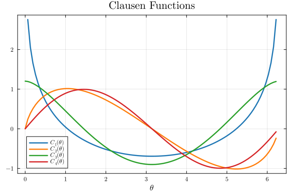
Fresnel integrals
The Fresnel integrals are
\[C(z) = \int_0^z \cos\!\left(\frac{\pi t^2}{2}\right)\,\mathrm{d}t, \qquad S(z) = \int_0^z \sin\!\left(\frac{\pi t^2}{2}\right)\,\mathrm{d}t.\]
fresnel(z) returns (C(z), S(z), C(z) + im * S(z)). The convenience functions FresnelC, FresnelS, and FresnelE return the corresponding components. Real and complex arguments are supported; integer arguments are promoted to floating point.
using FewSpecialFunctions
C, S, E = fresnel(1.0)
FresnelC(1 + im)
FresnelS(1 + im)
FresnelE(1 + im)Real axis
default(fontfamily="Computer Modern", linewidth=2.5, framestyle=:box, grid=true)
x = range(-6, 6, length=1000)
plot(x, FresnelC.(x), label=L"C(x)", xlabel=L"x", ylabel="value",
title="Fresnel integrals on the real axis")
plot!(x, FresnelS.(x), label=L"S(x)")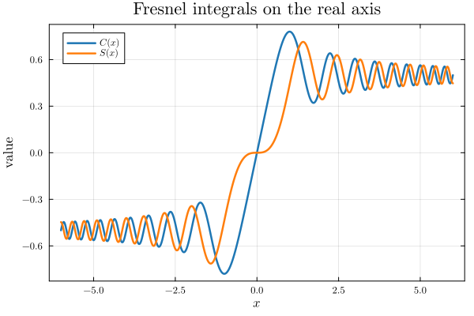
Euler spiral
default(fontfamily="Computer Modern", linewidth=2.5, framestyle=:box, grid=true)
x = range(-12, 12, length=1500)
plot(FresnelC.(x), FresnelS.(x), label=nothing, xlabel=L"C(x)",
ylabel=L"S(x)", title="Euler spiral")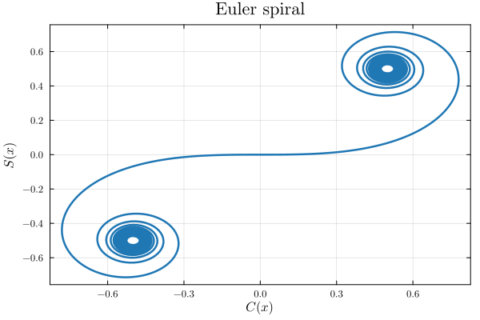
Complex plane
using DomainColoring, FewSpecialFunctions
domaincolor(FresnelE, [-2, 2, -2, 2], grid=true)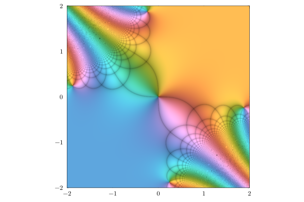
The implementation combines a convergent series near zero, stable intermediate evaluation, and asymptotic expansions for large arguments. It is adapted from this paper and the upstream Fortran source repository.
Dawson integral
\[D(x) = e^{-x^2}\int_0^x e^{t^2}\,\mathrm{d}t.\]
dawson(x) evaluates the real Dawson integral. It is odd, is zero at the origin, and approaches 1 / (2x) for large magnitude arguments.
default(fontfamily="Computer Modern", linewidth=2.5, framestyle=:box, grid=true)
x = range(-8, 8, length=1000)
plot(x, FewSpecialFunctions.dawson.(x), label=L"D(x)", xlabel=L"x", ylabel="value", title="Dawson integral")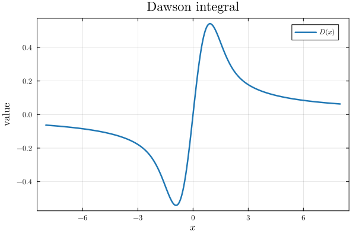
The implementation uses the adaptive series and continued fractions described in Zaghloul (2023) and is informed by the upstream MIT-licensed Fortran implementation.